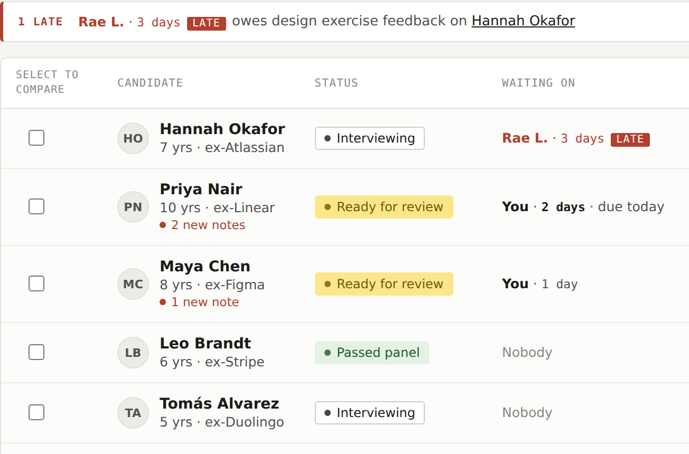
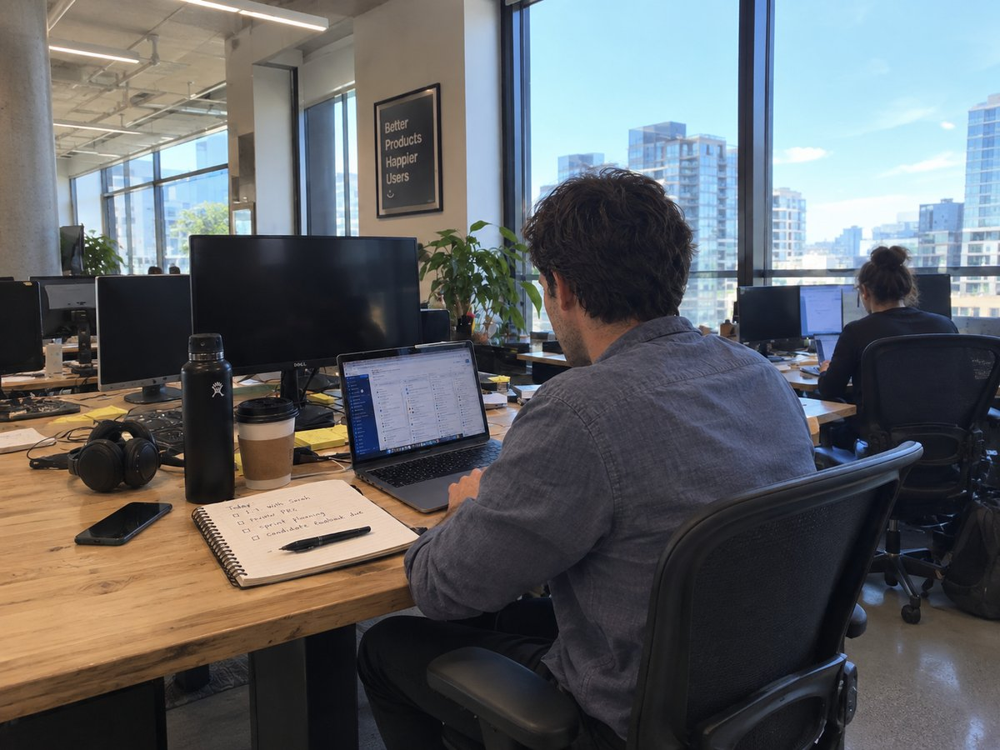
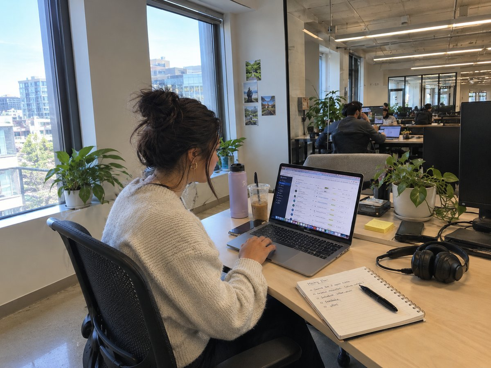
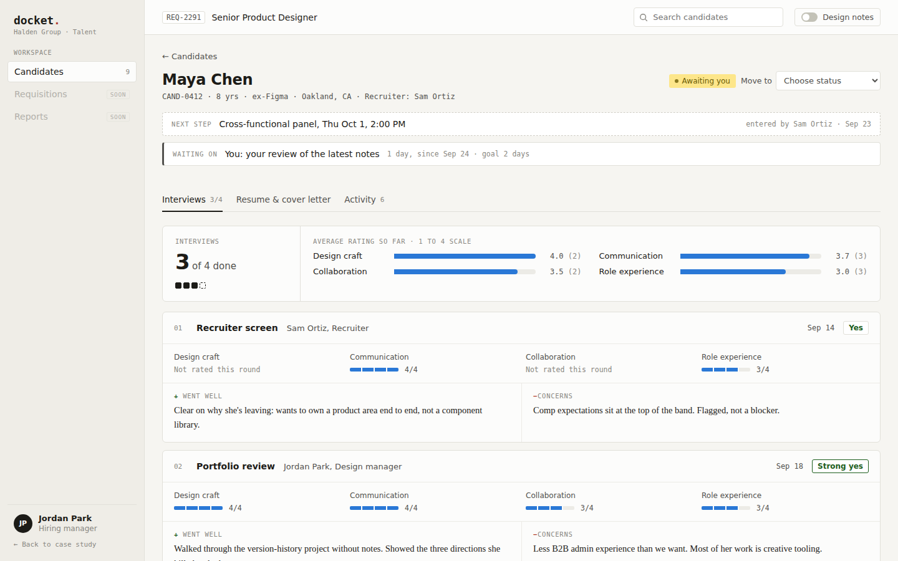
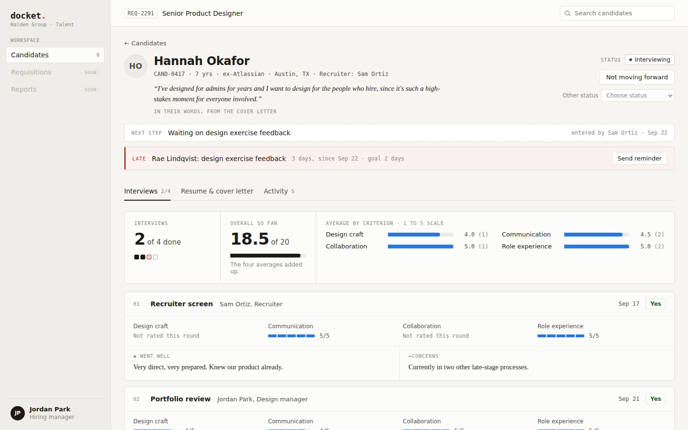

After interviews, feedback often comes in late and nobody can see who is holding it up. Docket shows hiring managers which candidates are waiting on them and for how long.

I am applying to jobs right now, so I wanted to design for the people on the other side. The hiring managers. They are the ones deciding whether to hire me. I wanted to know what makes their job hard and where the process could be better.
When a recruiter finishes a phone screen, their notes do not automatically reach the hiring manager. When the hiring manager makes a decision, the recruiter usually hears about it through Slack, email or a quick call. My guess going in was that details get lost along the way.
The research on the next pages tests this. Part of it holds up. The research pointed to slow feedback more than lost information.
I did not have direct access to hiring managers, so I worked from published research and from what recruiters, interviewers and candidates have already shared publicly. I did not interview anyone, and every quote in this case study links to where I found it.
The handoff between recruiters and hiring managers causes delays, scattered information, or uneven evaluation of candidates.
Published surveys and studies on recruiters and hiring managers.
15 posts, reviews and quotes from people in these roles.
Greenhouse, Lever, Ashby and Phenom.
Tagging every account by theme and counting.
What the patterns mean for Docket.
I started with published data on how recruiters and hiring managers work together. One survey of more than 250 recruiters found:
say hiring managers take 2+ working days to give feedback on a resume
and that is only the resumesay it takes 2+ working days to debrief after an interview
struggle to get hiring managers to separate must-have skills from nice-to-have ones
rely only on basic email and messaging to communicate with hiring managers
I started out assuming information gets lost in the handoff. This data does not say that. It says hiring managers are slow to respond. Those two problems need different solutions, so finding out which one is true became the main question for the rest of my research.
Greenhouse calls this "scorecard peeking." Interviewers who read a colleague's rating before submitting their own tend to agree with it, so honest disagreement is less likely to come up later.
Metaview lists this as one of the main problems between recruiters and hiring managers. When details live in different places, the two of them end up with different pictures of the same candidate. The places it names:
Interviewers submit their ratings before they can see anyone else's. Greenhouse already does this by default, so it is a tested practice and not my own invention.
Whether hiring managers are really missing information, or whether they have it and do not get to it in time.
One example from each group. None of these are my interviews. They come from forums, articles and software reviews, and each links to the original.
| Who | What it tells us | In their words | Source |
|---|---|---|---|
| Recruiting leader | Good candidates can stall once they reach the hiring manager. | "We've all experienced when a great candidate is sourced and sent to the hiring manager only to fall into a black hole where they never hear feedback." | Andre Boulais, talent acquisition executive at Entelo, quoted by SHRM, 2022 |
| Recruiter and hiring manager | Hiring managers' schedules slow things down. | "Sometimes the hiring manager gets pulled into a last-minute meeting." | Richard Moy, recruiter and hiring manager, The Muse |
| Interviewers | Feedback competes with their real work. | "Google required interviewers to provide very detailed feedback on the tool and sometimes I don't have time to give it the same day." | Former Google interviewer, Blind |
| Candidates | The wait is visible from the outside. | "Sent a thank you note earlier this week and the recruiter said that feedback wasn't submitted yet, but interviewers have 3-5 days to submit feedback." | Candidate, Blind |
| Software reviewers | Today's tools mostly work for hiring managers. | "Best thing, it is easy for hiring managers to navigate." | Joanna K., Recruiting Manager, Greenhouse review on Capterra |
Checked against each tool's own help pages and product updates. Where I could not confirm something, the table says so.
| Tool | What it is | Hides others' feedback until you submit yours | Built for hiring managers |
|---|---|---|---|
| Greenhouse | Hiring software (ATS) | Yes, on by default | No separate app. Hiring managers get an "Applications to Review" panel on the main dashboard. |
| Lever | Hiring software (ATS) | Yes, as a team setting | No separate app found |
| Ashby | Hiring software (ATS) | Yes, as a setting (added 2021) | No separate app. Ready-made dashboards for recruiters and hiring managers (2023). |
| Phenom | Talent platform | not stated | Yes, sold as a separate Hiring Manager app |
| Docket | Concept | Planned | Yes, it is the whole product |
Hiding feedback until you submit your own is already standard, so every tool needs it. Phenom already sells an app for hiring managers, so I am not the first to see this gap. Docket can stand out on speed by showing late feedback.
I tagged each post, review and quote by what it was about, then counted. Three accounts did not fit any theme.
"Interviewers being late to give feedback is very common especially in big companies."
Greenhouse's own guide lists the reasons people give: "I am busy" and "It is not my job."
"Having a single system made collaboration between recruiters and hiring managers much smoother, w/o constant back-and-forth or status updates."
These reviews are written by recruiters. Hiring managers rarely review hiring software.
"My favorite aspect about Lever is being able to send candidates profiles and notes to one of our hiring managers and it goes straight to their email."
Only one review, but it matches the survey: 45% of recruiters rely only on email and messaging.
Information gets lost between the recruiter and the hiring manager, so they need a better screen.
The screens mostly work. Feedback is late because it is extra work, and hiring managers often read candidates in email.
Docket now focuses on fast feedback and showing delays.
Each candidate shows whose feedback is missing and for how long, next to an agreed turnaround. SHRM suggests hiring managers review resumes within 48 hours.
Four ratings and two short notes, meant to take minutes instead of a long write-up.
A morning email listing who is waiting on them, with one click into the candidate's record. Shown in the prototype as a preview.
Interviewers submit their own rating before seeing others', based on Greenhouse's research on peeking.
My first version was about giving hiring managers more information. After the research, it is about time: feedback is extra work, so it gets pushed back.
Most hiring software is built for recruiters, who work in it all day. Hiring managers open it a few times a week around their normal work, and the research says they are the slow step. Docket gives them one place to review a candidate and decide in the few minutes they have.
Several recruiters say today's tools already work fine for hiring managers. So Docket has to make feedback faster.
Companies already pay for hiring software. Docket works alongside it instead of asking anyone to switch.
Everything begins on the candidate list. Comparing people is something you do from there, not another tab to check.
Every score is typed in by an interviewer after the interview. Nothing gets scored automatically from a resume.
Interviewers submit their own rating before they see anyone else's, so the first opinion does not sway the rest.
Docket does not schedule anything. Booking stays in the tools people already use, and Docket picks up once an interview is done.
If you have applied for a job, you have met both. The recruiter usually contacts you first. The hiring manager is the person you would end up working for.

Illustrative photo · not a real personThe person the new hire will report to. Hiring is a small part of their job, fitted in around their normal work. They interview candidates and make the final decision.
e.g. a design manager hiring a designer
Illustrative photo · not a real personWorks in HR or talent acquisition and runs hiring for many roles at once. They find candidates, do the first phone screen, schedule interviews and send offers.
e.g. a talent partner at the same companyEvery line below is either something the research pages already showed, or a reasonable guess. Photos are AI-generated and illustrative, not photos of anyone real.
Hiring is about two hours of Daniel's week, squeezed between his other meetings.
"Sometimes the hiring manager gets pulled into a last-minute meeting."
She is running hiring for several roles at once. Docket only has to solve the hiring-manager side of her job, but it cannot get in her way.
"We've all experienced when a great candidate is sourced and sent to the hiring manager only to fall into a black hole where they never hear feedback."
A hypothetical week built from the research findings on the pages before this one, not a real person's diary.
Three open roles, three separate email threads and a Slack channel. No single place to see who is in the pipeline.
A recruiter sends over a strong candidate's resume by email. It sits in an inbox next to fifty other unread messages.
Back-to-back meetings all day. The candidate does not get reviewed, and nothing flags that a day has passed.
The recruiter follows up on Slack. It has been four days. The candidate is starting to look elsewhere.
Feedback finally goes out, rushed and vague, because it is now overdue instead of routine.
The candidate shows up flagged as waiting, with how long, next to an agreed turnaround. Feedback happens on day two, not day five.
This is my best guess at the workflow, based on the research. There are two points where information has to pass from one person to the other, and Docket is meant to handle both without anyone writing a message. Next, this becomes a side-by-side of how it works today and how it would work with Docket.
The first phone call happens outside Docket, the same way it does now.
Adds the resume, cover letter and interview ratings to the candidate's record.
Changes the status so the hiring manager knows it is their turn. No email needed.
The resume, notes, ratings and status all move together on one record.
Sees the resume, ratings and interview notes on one page.
Puts two or three candidates side by side, rated on the same criteria.
Picks the next step, for example Interviewing, Offer Extended or Not Moving Forward.
The recruiter sees the new status right away, without having to ask.
Contacts the candidate about next steps as soon as the status changes.
I wanted Docket to feel like a serious work tool. I borrowed a few details from paper case files, like a stamp, a blacked-out field, and handwritten notes. The stamp shows a status, and the blacked-out field stands for salary details that only some people should see.
| Candidate | Stage | Comp band | Recruiter note |
|---|---|---|---|
Maya Chen 8 yrs · ex-Figma |
Ready for review | 1 new | |
Devon Ruiz 5 yrs · ex-Notion |
Scheduling | · | |
Priya Nair 10 yrs · ex-Linear |
Passed panel | 2 new |
A working version of the three main screens: the candidate list, a candidate's record and the compare view. The candidates are made up. The reasons behind each decision are on the Key Screens pages.
Open prototype →I built the first prototype before the research. The research said the problem is slow feedback, and the first version had nothing that showed it. So I added it.
The status says whose turn it is, but not for how long. A candidate who has been stuck for days looks the same as one who arrived an hour ago.
1 A bar at the top lists anyone past the team's goal. 2 A new Waiting on column shows whose turn it is and for how long, and turns red when it is late. Try it on Hannah Okafor's record →
Feedback runs late because it is extra work (7 of 15 accounts), and SHRM suggests hiring managers review resumes within 48 hours.
A 2-day team goal, a Waiting on column, a late bar, and a Send reminder button inside the candidate's record.
Mazzy could not tell whose side the hold-up was on. After I reworded it, Leo, Conner and Johnny all got it right away, 5/5 sure. Ash, Mazzy and Leo all said seeing "Late" helps.
I ran each session and wrote down what the tester did and said. Ash tried the second version. I fixed what Ash got stuck on, then Ash and Mazzy tried the third. I fixed that round too, then Leo tried the fourth. Same tasks every time, so the rounds line up. New testers are on the next page.
| Task | Round 1 · Ash | Round 2 · Mazzy | Round 3 · Leo |
|---|---|---|---|
| Find who is waiting on you | R1 · Found it, but confusedRead the "Awaiting you" status and the "Waiting on: You" column as the same thing twice, and counted three. R2 · Found it · 4/5Went by the Waiting on column. Would start with the one that is due today. | Found itWent by the Ready for review status and opened the top one. | Found itWent by the Ready for review status. |
| Remind whoever is holding up Hannah | R1 · DoneUsed Send reminder. R2 · Done · 5/5Used Send reminder. | StuckCould not tell if the hold-up was on the team's side or Hannah's. The page read like a resume with nothing to click, and Send reminder did not say what it would do. | Done · 5/5Clicked Remind Rae. The big yellow button meant click it, and the hold-up was Rae's, not his. |
| Move Maya to the next step | R1 · Stuck · 1/5Did not know what "next step" meant or how to move her. R2 · Done · 5/5Read the overall score as how she did across every step. | StuckSaw Not moving forward, but not how to move her ahead. Could not find the interview notes, and was not sure what had changed after acting. | Done · 5/5Read the overall score as how well she did. |
| Compare the finalists and pick one | R1 · Stuck · 1/5Did not know who the finalists were or how to compare them. R2 · DonePicked Aisha for the best overall score and almost no concerns. Could not find the recommendations. | Done, with a hintThought the checkboxes would move or delete people, and would have clicked the name. Once shown, liked the graphs a lot. Decided on experience, interviews and status. | Needed a hintClicked names, not the checkboxes, and only compared once told. Said they were all still interviewing, so picked at random. |
| Act on the morning email | R1 · Not in this round R2 · Done · 4/5 | Done · 3.5/5 | Done · 5/5Said it could use some quality of life changes. |
After fixing what came up, I gave the same tasks to three people who had never seen Docket, to see if the fixes hold up for fresh eyes. All three are done, and what they found is fixed below.
| Task | New · Conner | New · Johnny | New · Brett |
|---|---|---|---|
| Find who is waiting on you | Found it · 5/5Used Waiting on you at the top, and "You" next to each name. | Found itWent by the yellow Ready for review tag. Asked where a candidate was in the process, he opened what the interviewers said and started listing it. | Found it · 5/5"It told me." Read his candidate as ready for an interview. |
| Remind whoever is holding up Hannah | Done · 5/5Clicked Remind Rae. | Done · 5/5Sent the reminder. | Done · 5/5Sent the reminder. |
| Move Maya to the next step | Done · 5/5Read the overall score as how well she did in every step combined. | Done · 5/5Said she meets almost every criterion, weakest on role experience, then collaboration. Guessed the four 1 to 5 ratings add up to 20, which is right. | Done · 5/5Read the overall score as how good a fit the person is. |
| Compare the finalists and pick one | Done · 4/5Picked by best score and no concerns. Did not know he could tick the boxes to compare. | StuckCould not find how to compare and needed to be told. Picked the top scores with the most years of experience. | Done · 5/5Picked by overall score. Still confused by two Compare buttons, and read the checkboxes as delete. |
| Act on the morning email | Done · 4/5 | Not asked | Not asked |
Brett found two Compare buttons confusing. Now there is one. With nobody picked it compares the finalists, and once you pick people it compares them.
Compare and Archive used to sit apart, a toggle on each row plus its own button. Now one checkbox selects a row, and a bar at the bottom lets you Compare or Archive whatever is checked. Archive moves people to Hidden instead of deleting them, since hiring records have to be kept, and it comes with Undo.
Johnny noticed the Compare screen listed people in no order. Everything on it now reads from highest overall score down.
Brett suggested one. I would rather fix the screen than explain it, so I am holding off unless the new Compare still gets missed.
Leo's idea from round 3. Every column title sorts the list now, with an arrow showing which way.
Every change here came from something Ash did or said. Then Ash came back and Mazzy tried it for the first time, running the same tasks on the new version. It worked for Ash, not for Mazzy.

To move Maya forward you had to open a status dropdown and pick the right option. Ash did not know what to do.
1 The next step is a button that says what it does. 2 An overall score out of 20 next to the breakdown. This time Ash moved Maya forward, 5/5 sure. Mazzy missed the button, so this is not solved yet. Try it →
| What happened in round 1 | What I changed | Round 2 (Ash, Mazzy) |
|---|---|---|
| "Awaiting you" and "Waiting on: You" read as the same thing | Renamed the status Ready for review, and added one Waiting on you filter. | Both found them |
| Did not know how to move Maya forward | A button that names the next step, plus Not moving forward. The dropdown is still there as Other status. | Ash did it. Mazzy missed the button |
| Did not know who the finalists were or how to compare | A Finalists filter, a column labeled Compare, and a Compare button at the top. | Both compared. Mazzy needed a hint |
| "Cross-functional panel" was unclear | Renamed it Team panel. | No confusion |
| Wanted one number and a 1 to 5 scale | Ratings are now 1 to 5, with an overall score out of 20. The breakdown stays next to it. | Ash decided by it. Mazzy needed it explained |
| Wanted to sort | Sort by last interview, interviews completed, overall score, waiting longest or name. | Ash used it. The score is not shown |
| Felt like numbers, not people | Initials for each person, and their own words from the cover letter before any scores. | Not asked yet |
Round 2 split. Ash finished everything, Mazzy got stuck on two tasks, including the one the research led to. I built these changes, then Leo tested them in round 3, and Conner tried them as a new tester.

"Waiting on Rae Lindqvist" and a Send reminder button. Mazzy could not tell if the problem was the team's or Hannah's, or what the button would do.
1 It says in plain words that the hold-up is on the team, not Hannah. 2 The button says who the reminder goes to and how. 3 A "Your decision" box says whether you need to do anything. Leo and Conner, a new tester, both got it right away, 5/5 sure. Try it →
Mazzy could not tell whose side Hannah's hold-up was on. It now says, and the button reads "Remind Rae." Leo and Conner: 5/5.
Mazzy missed the button to move Maya ahead and could not tell what changed. The decision is its own box now, and afterward it says what moved, with Undo. Leo and Conner: 5/5.
Mazzy only found the concerns at the bottom. Every interviewer's pros and concerns now sit first, concerns in bold, with the recommendations.
Mazzy read the checkboxes as move or delete, so the column now says what they are for. Leo still clicked names and only compared once told, Conner did not know he could tick them, Johnny needed to be told how, and Brett read them as delete. In five of seven sessions someone needed help comparing.
Rebuilt after the new testers.Mazzy wanted to act where the decision happens. Each person on the Compare screen has a move forward button.
Ash could sort by overall score but never see it. The list now has an Overall column.
Ash said "Late" looked different in the bar and the table. Both use the same red tag now.
Ash wanted to start with the candidate due today. The list now opens sorted by what is late or due.
Mazzy asked to sort by rating or interviews. Leo found the Sort by menu only at the end and said it is in a confusing spot. He suggested clicking a column title, like Status, to sort by it. Every column title sorts now.
Ash and Leo read it as how good the person is. Ash picked Aisha for her score, though she already had an offer. Mazzy needed it explained and decided on experience and status. Johnny guessed on his own that the four ratings add up to 20.
Ash wanted to. I am holding off until another tester asks, because four sets of bars get hard to read.
Docket has not shipped, so there are no results here. These are the numbers I would track if it did, and why each one matters.
| What I would track | Why it matters | Comes from |
|---|---|---|
| Days from interview to feedback | The research said feedback runs late because it is extra work. This is the main number Docket should shrink. | Research, 7 of 15 accounts |
| Feedback turned in within the 2-day goal | The Late tag is built around this goal. If this share does not go up, the tag is not changing anything. | SHRM's 48-hour guideline |
| Reminders that end in feedback | Shows whether Remind Rae gets people to act or just gets ignored. | Round 3 testing |
| Days from finalists to a decision | Compare and the Your decision box exist to make this part faster. | Key screens 02 and 03 |
| Recruiter follow-ups per hire | Recruiters chase hiring managers over Slack and email. Fewer follow-ups means Docket is doing that job for them. | Persona: Sam |
Less time figuring out what needs them.
Less chasing people for feedback.
Less time waiting to hear back.
Faster decisions, and fewer good candidates lost while they wait.
How I would test it first: one hiring team uses Docket for a month, and I compare their interview-to-feedback time with the month before.
I went in sure the problem was lost information. The research pointed to slow feedback instead, and recruiters' reviews said today's tools already work fine. So I changed Docket to focus on showing delays.
Research first, screens second. I built the prototype before the research, so the biggest change was added on top instead of shaping it from the start. I would also look harder for hiring managers' own words, since most public reviews come from recruiters.
Test the rebuilt Compare with someone new, since comparing is the task most testers missed. Then build rate before you read, the last change the research pointed to.
| Research | Done. 15 firsthand accounts, 6 published sources, and 4 competing tools checked against their own help pages. |
| Prototype | Sixth version. Three clickable screens and a morning email, with the fixes from every round of testing. |
| Testing | 6 testers, 7 sessions. Every fix worked except comparing, which I rebuilt after the last round. |
| Next | Test the rebuilt Compare with someone new. Then build rate before you read. |
This is a concept, so the real test would be a hiring team using it for their actual hires.